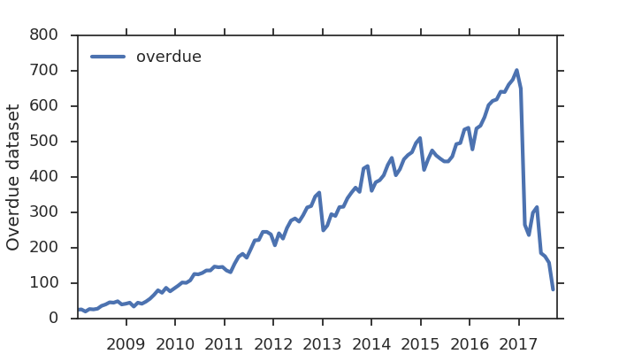

Datasets overdue for publication in GEO repository
Updated: 2017-09-13
An "overdue" dataset is one that is still has yet to be made public even after the first detected reference in a publication.
GEO rules require authors to make the dataset public once it appears in a publication.
Based on GEOmetadb with timestamp: 2017-09-03 21:09:05
Waiting for 82 datasets as of 2017-09-13:
| gse | published_on | journal | doi | title |
|---|---|---|---|---|
| GSE87440 | 2017-04-12 | Oncotarget | 10.18632/oncotarget.16872 | The synthetic antihyperlipidemic drug potassium piperate selectively kills breast cancer cells through inhibiting G1-S-phase transition and inducing apoptosis |
| GSE92308 | 2017-04-18 | Oncotarget | 10.18632/oncotarget.17185 | High throughput sequencing identifies an imprinted gene, Grb10, associated with the pluripotency state in nuclear transfer embryonic stem cells |
| GSE93551 | 2017-04-19 | Oncotarget | 10.18632/oncotarget.17219 | LncRNA OIP5-AS1/cyrano suppresses GAK expression to control mitosis |
| GSE94914 | 2017-05-01 | Oncogene | 10.1038/onc.2017.128 | MYCN induces neuroblastoma in primary neural crest cells |
| GSE90773 | 2017-05-08 | Oncotarget | 10.18632/oncotarget.17706 | Deregulated expression of miR-29a-3p, miR-494-3p and miR-660-5p affects sensitivity to tyrosine kinase inhibitors in CML leukemic stem cells |
| GSE94988 | 2017-05-15 | Oncotarget | 10.18632/oncotarget.17874 | Impact of chronic unpredicted mild stress-induced depression on repaglinide fate via glucocorticoid signaling pathway |
| GSE96785 | 2017-05-23 | Oncotarget | 10.18632/oncotarget.18078 | MicroRNA profiles involved in trifluridine resistance |
| GSE96786 | 2017-05-23 | Oncotarget | 10.18632/oncotarget.18078 | MicroRNA profiles involved in trifluridine resistance |
| GSE96787 | 2017-05-23 | Oncotarget | 10.18632/oncotarget.18078 | MicroRNA profiles involved in trifluridine resistance |
| GSE93807 | 2017-06-12 | Oncotarget | 10.18632/oncotarget.18442 | Therapeutic utility of natural estrogen receptor beta agonists on ovarian cancer |
| GSE97725 | 2017-06-13 | Nucleic Acids Res | 10.1093/nar/gkx522 | Genome-wide profiling of S/MAR-based replicon contact sites |
| GSE97858 | 2017-06-13 | Nucleic Acids Res | 10.1093/nar/gkx522 | Genome-wide profiling of S/MAR-based replicon contact sites |
| GSE82771 | 2017-07-10 | PLoS One | 10.1371/journal.pone.0180899 | Screening for the protective effect target of deproteinized extract of calf blood and its mechanisms in mice with CCl4-induced acute liver injury |
| GSE90881 | 2017-07-13 | EBioMedicine | 10.1016/j.ebiom.2017.07.011 | Induction of Live Cell Phagocytosis by a Specific Combination of Inflammatory Stimuli |
| GSE91031 | 2017-07-14 | Genome Biol Evol | 10.1093/gbe/evx127 | Conserved Transcription Factors Steer Growth-Related Genomic Programs in Daphnia |
| GSE84848 | 2017-07-27 | Stem Cell Reports | 10.1016/j.stemcr.2017.06.016 | Surface Topography Guides Morphology and Spatial Patterning of Induced Pluripotent Stem Cell Colonies |
| GSE101311 | 2017-07-28 | eLife | 10.7554/eLife.27155 | IGF2 mRNA binding protein-2 is a tumor promoter that drives cancer proliferation through its client mRNAs IGF2 and HMGA1 |
| GSE95223 | 2017-08-01 | Int J Mol Sci | 10.3390/ijms18081674 | Strategies towards Improved Feed Efficiency in Pigs Comprise Molecular Shifts in Hepatic Lipid and Carbohydrate Metabolism |
| GSE101756 | 2017-08-02 | Front Immunol | 10.3389/fimmu.2017.00913 | Intrinsic Plasma Cell Differentiation Defects in B Cell Expansion with NF-κB and T Cell Anergy Patient B Cells |
| GSE82086 | 2017-08-02 | Front Plant Sci | 10.3389/fpls.2017.01308 | Perturbation of Auxin Homeostasis and Signaling by PINOID Overexpression Induces Stress Responses in Arabidopsis |
| GSE84185 | 2017-08-08 | Front Mol Neurosci | 10.3389/fnmol.2017.00248 | Translational Identification of Transcriptional Signatures of Major Depression and Antidepressant Response |
| GSE87806 | 2017-08-10 | PLoS One | 10.1371/journal.pone.0182470 | Mesenchymal stromal cells (MSC) from JAK2+ myeloproliferative neoplasms differ from normal MSC and contribute to the maintenance of neoplastic hematopoiesis |
| GSE89587 | 2017-08-10 | PLoS One | 10.1371/journal.pone.0182678 | Increased microRNA-93-5p inhibits osteogenic differentiation by targeting bone morphogenetic protein-2 |
| GSE90748 | 2017-08-11 | Front Immunol | 10.3389/fimmu.2017.00965 | Mycobacterium bovis Bacillus Calmette–Guérin Alters Melanoma Microenvironment Favoring Antitumor T Cell Responses and Improving M2 Macrophage Function |
| GSE100599 | 2017-08-14 | PLoS One | 10.1371/journal.pone.0181948 | Genome-wide regulation of electro-acupuncture on the neural Stat5-loss-induced obese mice |
| GSE84402 | 2017-08-14 | Mol Cancer | 10.1186/s12943-017-0680-1 | STAT3-mediated upregulation of lncRNA HOXD-AS1 as a ceRNA facilitates liver cancer metastasis by regulating SOX4 |
| GSE94854 | 2017-08-14 | World J Gastroenterol | 10.3748/wjg.v23.i30.5508 | MicroRNA profile in neosquamous esophageal mucosa following ablation of Barrett’s esophagus |
| GSE94441 | 2017-08-15 | Sci Rep | 10.1038/s41598-017-08267-5 | Transcription factor ZNF148 is a negative regulator of human muscle differentiation |
| GSE87468 | 2017-08-15 | Sci Rep | 10.1038/s41598-017-08574-x | Identification of novel microRNAs in the sheep heart and their regulation in heart failure |
| GSE98903 | 2017-08-15 | Genom Data | 10.1016/j.gdata.2017.08.002 | Gene expression profiling of ramie roots during hydroponic induction and adaption to aquatic environment |
| GSE84554 | 2017-08-15 | mBio | 10.1128/mBio.01092-17 | The Capacity of Mycobacterium tuberculosis To Survive Iron Starvation Might Enable It To Persist in Iron-Deprived Microenvironments of Human Granulomas |
| GSE87449 | 2017-08-15 | Sci Rep | 10.1038/s41598-017-08574-x | Identification of novel microRNAs in the sheep heart and their regulation in heart failure |
| GSE89395 | 2017-08-16 | Nat Commun | 10.1038/s41467-017-00327-8 | Mast cells decrease efficacy of anti-angiogenic therapy by secreting matrix-degrading granzyme B |
| GSE89791 | 2017-08-16 | Sci Rep | 10.1038/s41598-017-08774-5 | Rewiring of the FtsH regulatory network by a single nucleotide change in saeS of Staphylococcus aureus |
| GSE95034 | 2017-08-16 | Sci Adv | 10.1126/sciadv.1701143 | Impaired DNA replication derepresses chromatin and generates a transgenerationally inherited epigenetic memory |
| GSE90516 | 2017-08-17 | Biol Sex Differ | 10.1186/s13293-017-0150-x | Sex chromosomes drive gene expression and regulatory dimorphisms in mouse embryonic stem cells |
| GSE92567 | 2017-08-17 | Sci Rep | 10.1038/s41598-017-08700-9 | A novel method for genome-wide profiling of dynamic host-pathogen interactions using 3′ end enriched RNA-seq |
| GSE97270 | 2017-08-17 | Sci Rep | 10.1038/s41598-017-08320-3 | Genome-wide identification and expression profiling of long non-coding RNAs in auditory and vestibular systems |
| GSE99666 | 2017-08-17 | Front Immunol | 10.3389/fimmu.2017.00971 | Human Blood CD1c+ Dendritic Cells Promote Th1 and Th17 Effector Function in Memory CD4+ T Cells |
| GSE94906 | 2017-08-18 | Sci Rep | 10.1038/s41598-017-09264-4 | The expression profiles of miRNA–mRNA of early response in genetically improved farmed tilapia (Oreochromis niloticus) liver by acute heat stress |
| GSE95217 | 2017-08-18 | BMC Genomics | 10.1186/s12864-017-4056-0 | Genomic, transcriptomic, and proteomic approaches towards understanding the molecular mechanisms of salt tolerance in Frankia strains isolated from Casuarina trees |
| GSE93625 | 2017-08-18 | eLife | 10.7554/eLife.27301 | Blockade of the LRP16-PKR-NF-κB signaling axis sensitizes colorectal carcinoma cells to DNA-damaging cytotoxic therapy |
| GSE89233 | 2017-08-18 | Sci Rep | 10.1038/s41598-017-07035-9 | Molecular bases for differential aging programs between flag and second leaves during grain-filling in rice |
| GSE92549 | 2017-08-18 | Sci Rep | 10.1038/s41598-017-09143-y | Identification and analysis of brown planthopper-responsive microRNAs in resistant and susceptible rice plants |
| GSE101658 | 2017-08-18 | Sci Rep | 10.1038/s41598-017-08623-5 | DNA methylation in demyelinated multiple sclerosis hippocampus |
| GSE101578 | 2017-08-19 | Int J Mol Sci | 10.3390/ijms18081805 | Single-Construct Polycistronic Doxycycline-Inducible Vectors Improve Direct Cardiac Reprogramming and Can Be Used to Identify the Critical Timing of Transgene Expression |
| GSE99283 | 2017-08-21 | Nat Commun | 10.1038/s41467-017-00355-4 | Brassinosteroid signaling-dependent root responses to prolonged elevated ambient temperature |
| GSE95571 | 2017-08-21 | Sci Rep | 10.1038/s41598-017-08898-8 | Compulsive methamphetamine taking in the presence of punishment is associated with increased oxytocin expression in the nucleus accumbens of rats |
| GSE94978 | 2017-08-21 | Sci Rep | 10.1038/s41598-017-07798-1 | Virulence and transcriptome profile of multidrug-resistant Escherichia coli from chicken |
| GSE88707 | 2017-08-21 | Sci Rep | 10.1038/s41598-017-08823-z | Potato spindle tuber viroid infection triggers degradation of chloride channel protein CLC-b-like and Ribosomal protein S3a-like mRNAs in tomato plants |
| GSE92759 | 2017-08-21 | eLife | 10.7554/eLife.23611 | A novel Drosophila injury model reveals severed axons are cleared through a Draper/MMP-1 signaling cascade |
| GSE70166 | 2017-08-21 | Sci Rep | 10.1038/s41598-017-08823-z | Potato spindle tuber viroid infection triggers degradation of chloride channel protein CLC-b-like and Ribosomal protein S3a-like mRNAs in tomato plants |
| GSE70096 | 2017-08-21 | Sci Rep | 10.1038/s41598-017-08823-z | Potato spindle tuber viroid infection triggers degradation of chloride channel protein CLC-b-like and Ribosomal protein S3a-like mRNAs in tomato plants |
| GSE70062 | 2017-08-21 | Sci Rep | 10.1038/s41598-017-08823-z | Potato spindle tuber viroid infection triggers degradation of chloride channel protein CLC-b-like and Ribosomal protein S3a-like mRNAs in tomato plants |
| GSE70037 | 2017-08-21 | Sci Rep | 10.1038/s41598-017-08823-z | Potato spindle tuber viroid infection triggers degradation of chloride channel protein CLC-b-like and Ribosomal protein S3a-like mRNAs in tomato plants |
| GSE70256 | 2017-08-21 | Sci Rep | 10.1038/s41598-017-08823-z | Potato spindle tuber viroid infection triggers degradation of chloride channel protein CLC-b-like and Ribosomal protein S3a-like mRNAs in tomato plants |
| GSE96863 | 2017-08-22 | Sci Rep | 10.1038/s41598-017-08827-9 | DEMETER plant DNA demethylase induces antiviral response by interferon signalling in animal cells |
| GSE96864 | 2017-08-22 | Sci Rep | 10.1038/s41598-017-08827-9 | DEMETER plant DNA demethylase induces antiviral response by interferon signalling in animal cells |
| GSE98834 | 2017-08-22 | Front Mol Neurosci | 10.3389/fnmol.2017.00266 | The Networks of Genes Encoding Palmitoylated Proteins in Axonal and Synaptic Compartments Are Affected in PPT1 Overexpressing Neuronal-Like Cells |
| GSE92670 | 2017-08-23 | Sci Rep | 10.1038/s41598-017-07740-5 | Elucidation of the molecular responses to waterlogging in Sesbania cannabina roots by transcriptome profiling |
| GSE97124 | 2017-08-23 | Drug Des Devel Ther | 10.2147/DDDT.S134518 | Paeoniflorin suppresses pancreatic cancer cell growth by upregulating HTRA3 expression |
| GSE83503 | 2017-08-23 | Sci Rep | 10.1038/s41598-017-09378-9 | Logic programming reveals alteration of key transcription factors in multiple myeloma |
| GSE101979 | 2017-08-23 | Front Pharmacol | 10.3389/fphar.2017.00573 | Alpha5 Nicotinic Acetylcholine Receptor Contributes to Nicotine-Induced Lung Cancer Development and Progression |
| GSE101404 | 2017-08-23 | Front Immunol | 10.3389/fimmu.2017.01006 | Goose Mx and OASL Play Vital Roles in the Antiviral Effects of Type I, II, and III Interferon against Newly Emerging Avian Flavivirus |
| GSE102152 | 2017-08-23 | BMC Genomics | 10.1186/s12864-017-4037-3 | Whole genome sequencing and comparative transcriptome analysis of a novel seawater adapted, salt-resistant rice cultivar – sea rice 86 |
| GSE101747 | 2017-08-24 | Front Immunol | 10.3389/fimmu.2017.01012 | Immunogenicity of DNA Vaccine against H5N1 Containing Extended Kappa B Site: In Vivo Study in Mice and Chickens |
| GSE88870 | 2017-08-24 | BMC Genomics | 10.1186/s12864-017-4070-2 | MicroRNA expression profiling of porcine mammary epithelial cells after challenge with Escherichia coli in vitro |
| GSE96886 | 2017-08-24 | eNeuro | 10.1523/ENEURO.0040-17.2017 | Histone Hypervariants H2A.Z.1 and H2A.Z.2 Play Independent and Context-Specific Roles in Neuronal Activity-Induced Transcription of Arc/Arg3.1 and Other Immediate Early Genes |
| GSE90763 | 2017-08-25 | Sci Rep | 10.1038/s41598-017-09819-5 | A Model of Exposure to Extreme Environmental Heat Uncovers the Human Transcriptome to Heat Stress |
| GSE98601 | 2017-08-28 | Sci Rep | 10.1038/s41598-017-10189-1 | Analysis of the miR-34 family functions in breast cancer reveals annotation error of miR-34b |
| GSE100313 | 2017-08-29 | Sci Rep | 10.1038/s41598-017-10380-4 | Early gestational maternal low-protein diet diminishes hepatic response to fasting in young adult male mice |
| GSE73807 | 2017-08-30 | Sci Rep | 10.1038/s41598-017-10730-2 | Transcriptomics analysis of salt stress tolerance in the roots of the mangrove Avicennia officinalis |
| GSE74619 | 2017-08-30 | Nat Commun | 10.1038/s41467-017-00540-5 | ATRX is a regulator of therapy induced senescence in human cells |
| GSE74620 | 2017-08-30 | Nat Commun | 10.1038/s41467-017-00540-5 | ATRX is a regulator of therapy induced senescence in human cells |
| GSE97929 | 2017-08-30 | Sci Rep | 10.1038/s41598-017-10098-3 | Meta-signature of human endometrial receptivity: a meta-analysis and validation study of transcriptomic biomarkers |
| GSE98386 | 2017-08-30 | Sci Rep | 10.1038/s41598-017-10098-3 | Meta-signature of human endometrial receptivity: a meta-analysis and validation study of transcriptomic biomarkers |
| GSE95370 | 2017-09-04 | Nat Commun | 10.1038/s41467-017-00479-7 | Editing an α-globin enhancer in primary human hematopoietic stem cells as a treatment for β-thalassemia |
| GSE101388 | 2017-09-04 | Sci Rep | 10.1038/s41598-017-09449-x | Human Primary Bone Marrow Mesenchymal Stromal Cells and Their in vitro Progenies Display Distinct Transcriptional Profile Signatures |
| GSE92479 | 2017-09-05 | Nat Commun | 10.1038/s41467-017-00451-5 | Phenotype-driven precision oncology as a guide for clinical decisions one patient at a time |
| GSE98114 | 2017-09-05 | Sci Rep | 10.1038/s41598-017-09058-8 | Transcriptome analysis of inflammation-related gene expression in endothelial cells activated by complement MASP-1 |
| GSE100970 | 2017-09-05 | Sci Rep | 10.1038/s41598-017-10215-2 | Comprehensive transcriptome profiling of Salvia miltiorrhiza for discovery of genes associated with the biosynthesis of tanshinones and phenolic acids |
| GSE98901 | 2017-09-05 | Nat Commun | 10.1038/s41467-017-00308-x | Decidualisation and placentation defects are a major cause of age-related reproductive decline |
Source code available on GitHub.